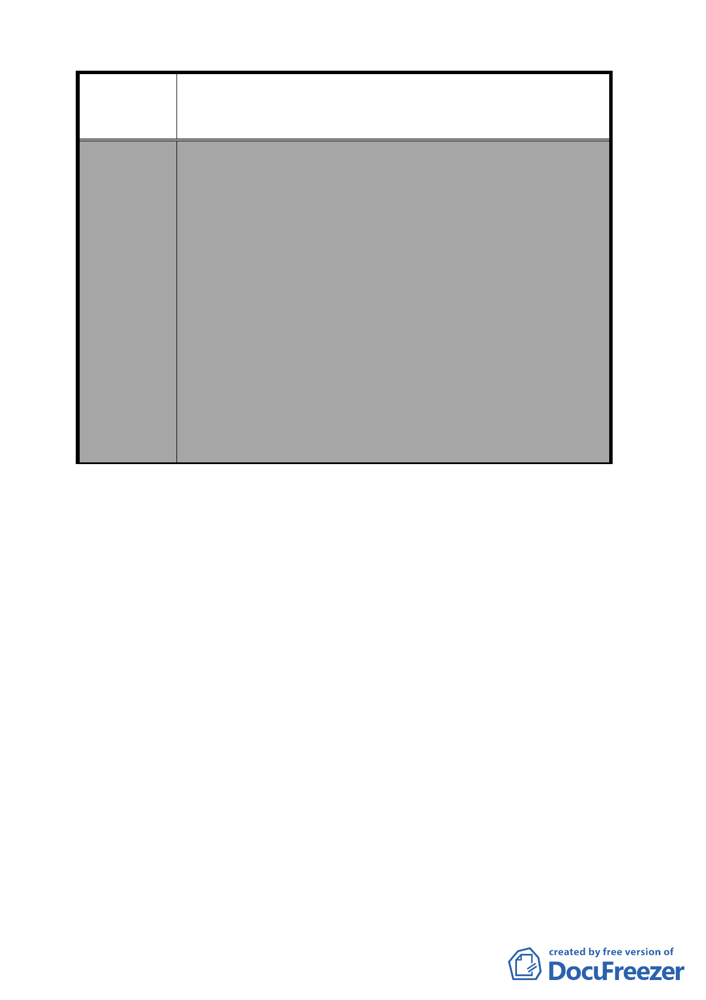

案名
擬定臺北市南港區中南段 2 小段 302-1 地號等機關用地
（供國家生技研究園區使用）及中南段 1 小段 628 地號
等機關用地（供中央研究院及國防部使用）細部計畫案
院路方向之路段，應開放供公眾通行，並由用地
單位負責開闢及管理維護。其中東側應連接四分
溪北側防汛道路及勤力橋，以銜接研究院路。
（2）上開路段涉及隧道及平面路段之設計，應符合以
下原則，以配合兩側交通系統，各路段設計並應
符合市區道路工程設計規範：
A.隧道部分：單向隧道斷面淨寬 10.5 公尺（配置
0.5 公尺維修通道、2 車道各 3 公尺、
機車專用道 2 公尺、人行暨自行車道
2 公尺）。
B.平面路段： 路寬 23 公尺，配置雙向各 2 車道 7
公尺，路側配置人行道暨自行車道共
4.5 公尺。其中連接至四分溪北側防
汛道路之路段，配置雙向各 1 車道及
人行道。
討論事項 二
案名：「變更臺北市南港區鐵路地下化沿線土地主要計畫案」
案情概要說明：
一、計畫目的：本案係市府為因應中央各單位於南港車站周邊地
區諸多重大建設計畫，並配合取得北部流行音樂
中心所需發展用地，爰針對南港區鐵路地下化沿
線國營事業、大型工業廠房以及低度使用私人土
地，依都市計畫法第 27 條第 1 項第 4 款提出主要
計畫變更。
二、本案經市府 97 年 10 月 27 日以府都規字第 09734296103 號函
送到會，自 97 年 10 月 28 日起公開展覽 30 日。
三、公展計畫內容概述：
（一）規劃範圍：南港區內鐵路地下化周邊地區，西起玉成街、
-8-